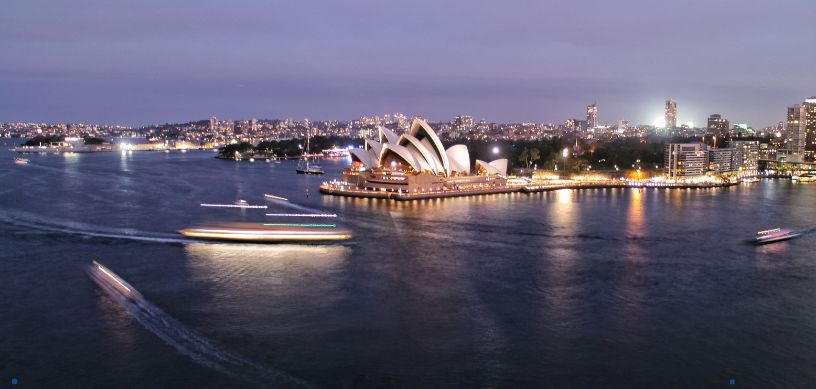

Australia is a great country to study abroad in owing to its natural splendour, lush landscapes, deserts, and beaches. It is one of the leading study overseas education hubs. Universities in Australia are renowned for offering top-notch instruction and economical research possibilities compared to most other locations. There are more than 1,100 higher education institutions located all around Australia that offer over 22,000 courses to foreign students. The nation's higher education system is excellent and is considered to be one of the best in the world. Australia's education system is cost-effective, delivering short, concentrated courses that themselves include advancements in science and technology. Degrees earned at Australian universities are highly valued by employers worldwide. More than 60,000 Indian students currently study in Australia. This blog provides information on the 5 leading student-friendly cities in Australia where international students can study.
1. Gold Coast: Gold Coast, situated in Queensland, is one of the top choices for international students. The city is renowned for its high standard of education in addition to its abundance of eateries, cafes, and natural attractions. Affordably priced education of a high calibre is available here. The cost of living in Gold Coast is likewise not extremely high for students, but it doesn't mean the standard of living is low. A high standard of life is attainable in addition to a high level of education. During their breaks, students can visit a variety of well-known tourist attractions. Theme parks like Tambourine Mountain Glow Worm Caves, Dreamworld, Tree Top Walkway, Sea World, or Infinity - an engaging, interactive home with incredible illusions and one-of-a-kind special effects are among the best examples. Bond University, which ranks first in Australia for overall graduate satisfaction and also charges some of the highest tuition rates in the nation, is located on the Gold Coast. It also houses campuses for South Cross University, and Griffith University, both of which provide reasonable options for students from abroad. There are a variety of options for off-campus living, including homestays and shared apartments.
2. Canberra: Canberra, the capital city of Australia, is one of the most affordable and livable locations for international students. Unexpectedly, students make up 23% of the city's population, making it one of the greatest locations in Australia for international students to study and reside. International students who study in Australia at Canberra can experience its many different cultures. According to the 2019 QS Ranking, it is also the 23rd best student city in the world. The typical cost of living in Canberra differs based on one's lifestyle and the type of housing one chooses, especially if he/she is living off-campus. Depending on the type of residence you select, lodging expenses can vary greatly from the least expensive ($160 per week for a room in a shared house) to the most expensive ($400 to $500 per week for a house with two to three bedrooms). Top ranking Australian universities like Charles Sturt University, and Australian Catholic University are located in Canberra.
3. Adelaide: Known as Australia's food and wine capital, Adelaide is teeming with activities, and cultural attractions. Also, there are numerous festivals held throughout the year. It is Australia's fifth-largest metropolis with a population of 1.3 million. Adelaide has the lowest cost of living among Australia's main cities. The average monthly cost of living for students who choose to reside in the city centre is A$2,100 (rent included). This is 27% less than Sydney's average cost of living. Adelaide is an excellent place to live and study due to its fresh, green environment, and coastal attractions. Students can enjoy Glenelg, an old coastal area while studying abroad in Adelaide. The well-known dolphin swim, as well as fishing, beach volleyball, and much more, are all available here. Prominent colleges in Australia viz., The University of South Australia, Flinders University, and the University of Adelaide, which is ranked in the top 1% of universities worldwide, are located here. Students who study in Australia in Adelaide can easily navigate the city thanks to the integrated bus, train, and tram transportation infrastructure.
4. Brisbane: Brisbane, Australia's third largest city, serves as the state capital of Queensland. It is regarded as being one of Australia's most affordable cities, unlike Sydney and Melbourne, which makes it a good option for students. The education system in this Australian city is of the highest calibre, despite being one of the least expensive. Also, it is renowned for its wonderful subtropical climate and abundance of entertainment opportunities. Brisbane is home to some of the top colleges in the world. The University of Queensland, Griffith University, and the Queensland University of Technology (which accepts the most study-abroad undergraduates) are the three top universities in Brisbane. Despite the popularity of cycling and the abundance of cycle tracks that make it simple for students to move around, public transit is well-connected inside the inner city. Brisbane's inner suburbs, where the majority of its educational facilities are situated, are where students often reside.
5. Melbourne: Melbourne is Australia's most important cultural hub and one of the world's most livable cities for seven consecutive years. Many of Australia's top firms have their corporate headquarters in Melbourne, which also houses a local office for national organisations like the Business Council of Australia and the Australian Council of Trade Unions. Melbourne, the highest-ranked city in Australia overall, is also placed 105th for Affordability. Melbourne's average annual undergraduate tuition rates are US$24,500, which is around typical for Australian cities. Living expenses in Melbourne are somewhat high. Rent in the city centre is the most expensive; according to RMIT University, shared housing costs between $200 and $300 per week. In a suburb like Bundoora or Brunswick, housing costs will be at least half of this, however, transportation costs will be higher. Yet, considering that the city ranked third overall in the QS Best Student Cities 2019 index, you could conclude that attending school here is well worth the additional costs.
For international students, Melbourne has a lot to offer. Because of this, studying there is the ideal choice for students from abroad. In Melbourne, you can combine your studies with a variety of leisure pursuits, such as going to sporting events (the Australian Open tennis and Formula One racing), watching comedic performances, or live music performances at various places. Top-ranking universities in Australia like RMIT University, and Deakin University are situated in Melbourne.
For further assistance or queries students can contact us, Edwise International and avail our wide range of services for students on destinations like study in UK,study in USA, study in Canada, study in Australia, study in New-Zealand, study in Singapore, study in Ireland and many other countries.